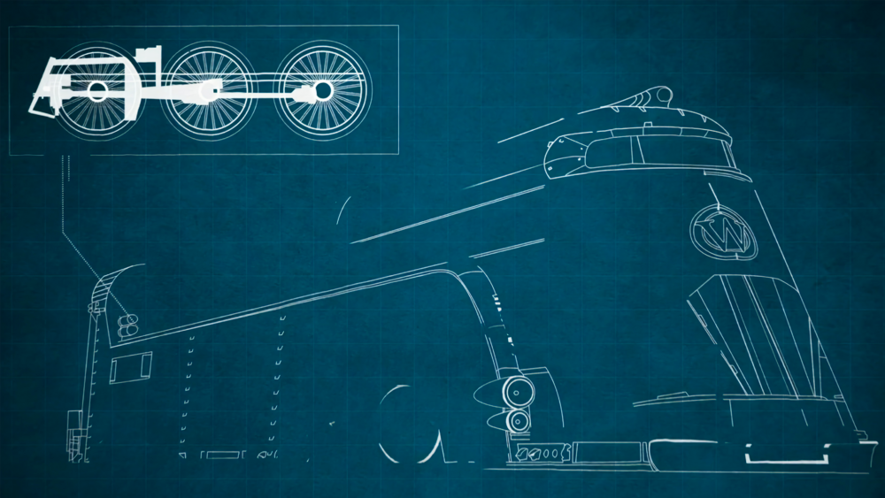

Thoughts on the Snowpiercer TV Series
剧版《Snowpiercer》观后有感
This article was originally published on my WeChat Official Account on April 28, 2022, and is reposted here.
Series Title: Snowpiercer
Chinese Title: 雪国列车
Directed by: James Hawes (pilot)
Production: Tomorrow Studios (ITV Studios)
Based on: the film and graphic novel of the same name
Executive Producer: Bong Joon Ho (director of the film version)
Premiere: May 17, 2020 (TNT)
Seasons: 4 (complete)
Season 1: IMDb tt6156584, 10 episodes, premiered 2020.
Season 2: IMDb tt11146896, 10 episodes, premiered 2021.
Season 3: IMDb tt13877192, 10 episodes, premiered 2022.
Season 4: 10 episodes, premiered July 21, 2024 on AMC/AMC+ (final season).

I've been binging this show lately — two and a half seasons in — and I have some thoughts I just have to get off my chest.
The story: after the world froze over, a remnant of humanity survives aboard a super-train designed by Wilford Industries.
Powered by an advanced "perpetual-motion engine," the train circles the Earth without ever stopping; vast and impossibly long, it carries a complete, self-contained ecosystem that lets its passengers sustain themselves — for better or worse.
Boarding originally required a ticket — only the wealthy who funded its construction and a select few of the powerful qualified.
But word leaked before departure, and desperate survivors broke through the cordon to cram onto the last train out.
Ticketless, they were confined to the very tail of the train.
The train runs on a rigid class system: First, Second, and Third Class by carriage.
Up front, the aristocratic cars have it all — pools, saunas, ballrooms, bars, every entertainment imaginable.
Dedicated cars raise livestock and grow crops, supplying fresh, abundant food.
The Tailies, meanwhile, are despised by the train's "upper class"; their quarters are worse than Third Class, the gap in living conditions is enormous, food is scarce, and the authorities have even restricted their right to reproduce — after all, in the eyes of those in charge, these stowaways owe them their very lives.
So some in the Tail decided to "rise up and change their fate," revolting again and again to seize power.
Honestly, after watching it, I have to say some of the character writing in this show shattered my worldview — or rather, the characters seem to have no worldview at all.
First Class paid a fortune.
Second and Third earn their berths by working for the train.
The Tailies were never part of the plan at all — they forced their way past security.
Once aboard, they whine daily: about mothers shot by guards during the breach who never made it on; about being given only the lowest-grade food and housing.
And then they spend every day plotting rebellion (yes, they've rebelled multiple times), wailing about how unfair it all is since "we're all human."
Here's my question: on what grounds do the Tailies claim their uprisings are just and moral, when their mouths are full of righteousness and equality every day?
Where was all that talk of fairness when they stormed the gates?
The seizure of private property just gets swept under the rug.
The show repeatedly floats the idea of cutting the Tail loose, then backs off every time on moral grounds.
Personally, I think not abandoning them is already an enormous mercy — and yet the Tail dreams of standing equal with the front.
For First, Second, and Third Class, the logic is simple: we paid and we worked for this train.
Are we supposed to end up the suckers, splitting everything evenly with the Tail?
Melanie Cavill — who "abandoned" Joseph Wilford to launch the train — was, in truth, always thinking about who could stay alive.
As chief engineer, she's richly drawn: brilliant, driven, and her purpose was never just maintaining the train, but preserving everyone who could survive.
Yet in the show she's misunderstood, wronged, and more than once "punished" without reason.
In my view, she's a courageous, resourceful leader with a sense of justice — clear-headed, pragmatic, serving the interests of the greatest number, fearless in danger and willing to sacrifice herself.
To me, she's a flawless hero.
But she forgot one thing: she is a ruler, and maintaining order is her first duty — that's what keeps the train running.
Given the premise and the setting, I actually think both First Class and the Tail are expendable — neither contributes anything practical to the train as it runs now.
Military power must be held firmly in one's own hands, and the middle classes matter most.
Yet in the show, it's the two least valuable groups who revolt.
Watching them launch their uprisings with righteous faces is frankly comical.
I suppose that's what freedom and power look like through American eyes.
Then there's the utterly detestable Andre Layton — this neither-black-nor-white guy with a head of skinny dreads, and his daily conduct!
The character makes no sense: a good cop, a just cop, a logical and thorough cop — and this cop can't see the holes in his own behavior?
Never thinks to earn better treatment through work, only ever scheming "plunder" or "revolt."
What a formidable mind — it reminds me of the old saying: the shameless are invincible!
And of Master Zhuge Liang's famous line: "I have never seen such a shameless man!"
The guy can't act — he's even a little manic — and his delivery is terrible.
Waking from the sleep chambers, he should be groggy and disoriented, but the moment he opens his mouth it's full-throated wailing, like a ghost howling at full lung capacity.
And this man somehow survives into Season 3 — every time he should have died, he didn't!
Watching this mob of self-righteous rioters leaves me truly speechless.
There are several other characters who left a deep impression on me — Ruth, Alexandra Cavill, Jinju, Zarah, Sam Roche, and the equally detestable Josie McConnell.
Joseph Wilford, on the other hand, I found very convincingly drawn.
As for why Alexandra Cavill is on my memorable list — that deserves its own piece, next time.
But think about it more carefully: resources aboard are finite, so why keep a whole class of idle aristocrats?
And getting rid of the Tail's poor would be trivially easy — so why are they still on the train?
Could it be a "conspiracy"?
First, the Second and Third Classes are obviously indispensable — their contribution to the train is arguably the greatest.
To maintain his rule, Wilford can't personally go around killing off the resource-squandering upper class, but he needs a pretext and a method to thin their numbers, so the train's resources aren't bled dry by their decadence.
So he keeps the Tail around, artificially engineering a brutally unequal class hierarchy to provoke class struggle.
The real purpose: maintaining the train's social dynamic equilibrium.
Imagine: no class divisions, no revolution or struggle, no bloodshed or sacrifice — the system would overload, and the quiet life would be replaced by the fear and rage of being trapped in a metal box, until the whole system collapsed into chaos.
So the Tail must be kept reckless and impulsive, their hope for life stoked into revolutionary fervor; First Class must be kept sunk in pleasure, rendered cold and stupid.
Then each collision of revolution and bloodletting thins them both out, quieting everyone down — until the next collision begins to brew.
That is how the train's internal system reaches dynamic equilibrium; how every carriage stays on the rails.
And how humanity endures.
Alright, that's enough for this one.
Call it a review or whatever — really, I just wanted to roast those rioters.
That's all.
See you next time.

本文于2022年4月28日首发于微信公众号，转载至此。
剧名：Snowpiercer
译名：雪国列车
导演：詹姆斯·哈维斯（试播集）
出品：Tomorrow Studios（ITV Studios旗下）
改编自：同名电影、漫画
监制：奉俊昊（电影版导演）
首播：2020年5月17日（TNT）
共四季（已完结）
Season 1：IMDb: tt6156584，共10集，2020年首播。
Season 2：IMDb: tt11146896，共10集，2021年首播。
Season 3：IMDb: tt13877192，共10集，2022年首播。
Season 4：共10集，2024年7月21日于AMC/AMC+首播（最终季）。
最近在刷这部剧，刷了两季半，心中有一些感想感觉不吐不快。
本剧的故事主要讲述在世界变成冰冻大地的后，部分人搭乘在威尔福德工业设计的一辆超级列车上幸存下来。列车搭载先进的“永动机”，环绕地球永不停歇，巨大又巨长无比的列车配备了一套完整且独立的生态系统，使得幸存者可以自给自足自生自灭。
原本，登上这辆列车是需要门票的，只有援助建造资金的有钱人和少数有权人才有资格登车。但列车在出发前泄露了消息，部分幸存者突破封锁，拼着命挤上了末班车。但由于他们是无票上车，只能生活在列车的最尾端。
在列车中，有严格的等级制度，按车厢划分一等车厢、二等车厢和三等车厢。前部的贵族车厢，泳池，桑拿，舞厅，酒吧，各种娱乐设施都应有尽有。列车还设有专门饲养和培育动植物的车厢，为他们提供丰富新鲜的食材。而车尾的人，是被列车里的“上层阶级”所讨厌和鄙视的，居住的环境比列车里设定的三等车厢都不如，生活环境上差别巨大，吃不饱，还被决策者限制了生育权，毕竟在他们的眼里，这群偷渡上来的人，命都是他们给的。于是车尾的一些人决定“奋起反抗、改变命运”，一次次地进行暴动夺权。
其实看过之后，从我个人的感官来说，这部剧设定的某些人设，简直三观碎一地，或者说没有三观。
一等车厢的人是付了巨额金钱的，二/三等车厢是为列车服务，通过工作换取席位。而车尾的那些人原本根本不在计划内，是冲破防卫硬闯的。上车之后还天天埋怨自己的妈妈硬闯的时候被守卫开枪打死了，没上成车；埋怨列车只给他们最低等的食物和最低等的住宿。然后就天天想着谋反（嗯，还谋反暴动了好几次），觉得大家都是人为什么这么不公平。
问题在于，车尾的人搞暴动在以什么理由来符合正义符合道德，天天满嘴仁义道德，满嘴公正平等。那么闯卡上车的时候怎么不说公正平等，强占私人财产的行为就当没发生过。
剧集多次提到要抛弃车尾，最后都因为仁义道德放弃了。我个人觉得没有抛弃车尾就已经是很大的仁慈了，车尾还妄想和车头平起平坐。对于一/二/三等车厢来说，这列车就是我出钱出力，没成最后我们成了冤大头，成了你尾车的人就来平分？
Melanie Cavill作为“抛弃了”Joseph Wilford决定发车，其实她一直在考虑能活着的人。作为首席工程师，剧中对她的刻画还是很丰满的，非常聪明也非常积极的一个角色，她想表达出来的不仅仅是维护列车，更是维护能活下来的所有人。但是在剧中，有委屈不被理解，也有被蛮不讲理地“制裁”过。
从我个人观点来看，这是个有勇有谋的领导者，有正义感，头脑清楚懂得权衡，知道为最大群体的利益服务，而且不惧危险，甘愿牺牲个人。在我心中，这是个完美的正面人物。但她忘了自己其实是统治者，维护秩序才是首要任务，才能维持列车运行。
在这个基础，在这种环境设定上，其实我觉得一等车厢和尾部车厢的人都可以牺牲，因为他们对于现在的列车并没有实际贡献。军事力量必须牢牢抓在自己手里，同时中间车厢的人最重要。可剧中竟然是最没有价值的两类人引发叛乱。看着他们一副正义凛然发起暴动的样子，真是滑稽。这大概就是美国人眼里的自由和权力。
再说说这个令人“深恶痛绝”的Andre Layton，这长的黑不黑白不白的满头小脏辫的货，在剧中一天天的那副操行！人设很奇怪，一个好警察，一个正义的警察，一个逻辑清晰考虑周全的警察，就这么个警察，发现不了自己的行为漏洞？不会想着利用工作换取待遇，天天想着“掠夺”或“暴动”。这是何等强大的思维能力啊，让我不禁想起某句老话，人不要脸天下无敌！还想起孔明先生的一句，“我从未见过有如此厚颜无耻之人”！
这哥们不光演技差甚至有点神经质，台词功底也太差了。比如从沉睡仓里醒来本来应该是神智不清，但一到说台词就像鬼哭狼嚎中气十足。
这种人竟然还活到了第三季，该死的时候一次都没死！
看到这群理直气壮的暴民真的是很无语。
其实在剧中，还有几个人物刻画我印象非常深的，比如Ruth、Alexandra Cavill、Jinju、Zarah、Sam Roche，呃，还有一个同样令人“深恶痛绝”的Josie McConnell，反倒是Joseph Wilford我认为刻画的还是很真实的。至于为什么印象深的觉得里面有Alexandra Cavill，那就等着下一次专门开一篇来解说这几个人物角色。
那么再仔细想想，车上资源有限，为什么还养着一大堆只享受的贵族阶级呢？而且要把尾车的穷人们处理掉其实非常简单，为什么还会一直留在列车上呢?
会不会是一种“阴谋”？
首先，很显然二/三等车厢的阶级的存在是必不可少的，他们对列车的贡献也可以说是最大的。为了维护统治，Wilford不能亲自出面去杀死挥霍资源更多的上层阶级，但是他又需要一个理由和方法来帮助他去削减上层阶级的数量，从而保证列车资源不会被他们奢靡的生活消耗光。所以，保留这一部分尾车人，人为地制造出严重不平等的阶级等级，激发阶级斗争。这么做的目的，其实是为了维持列车的社会动态平衡。
试想一下，假如没有阶级之分，不存在革命和斗争、流血和牺牲，那么不但系统会超载，原本安静的生活也会被因为困在车厢内而产生的恐惧和暴躁代替，最终系统会陷入混乱。
所以，对尾车阶层，一定要使他们鲁莽、冲动，要让他们对生活的有希望激发出革命的热情；对一等车厢阶层，要让他们沉湎于享乐，使他们冷漠、愚蠢。这样，革命的碰撞和流血就能消减他们，让他们都能重新安静下来，然后又孕育着下一次碰撞。
这样，列车内部系统就达到了动态平衡；每一节车厢才能保持不会脱轨。人类才能持续存在下去。
行了，这篇就先这样。其实什么剧评或者感想，我就是想吐槽那些暴民。
就这样，下次见。